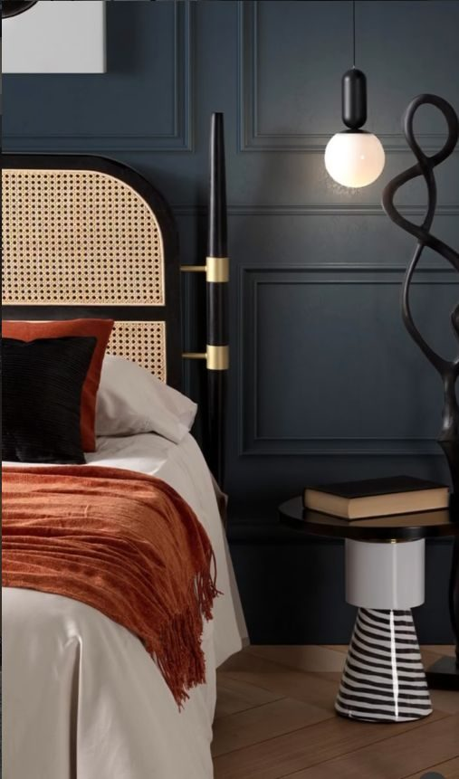
Dormitorios
Cabeceros, textiles y luz de mesilla pensados para el descanso, con el mismo cuidado que el resto de la casa.
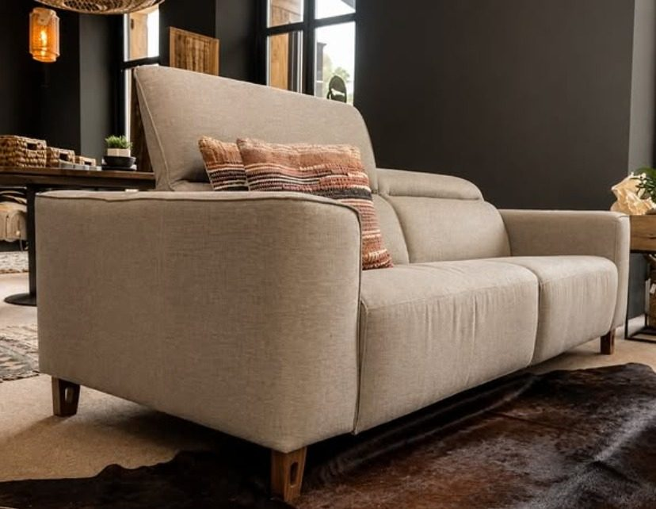
Estudio en Orio, Gipuzkoa
Espacios con carácter, pensados para vivirse: diseño de interiores, mobiliario y decoración a medida, desde la primera idea hasta el último detalle.
Lo que trabajamos

Cabeceros, textiles y luz de mesilla pensados para el descanso, con el mismo cuidado que el resto de la casa.
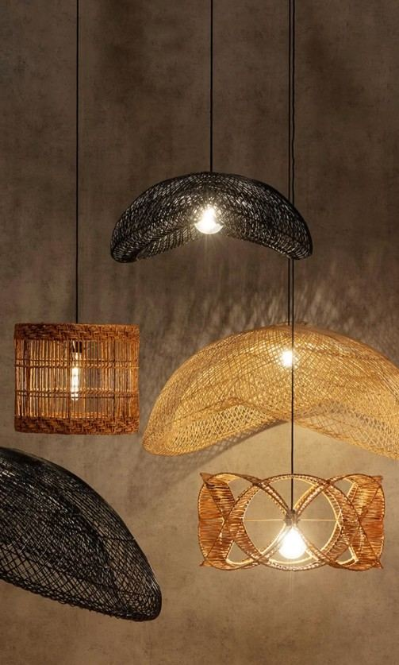
Lámparas y puntos de luz que marcan el tono cálido de cada espacio.
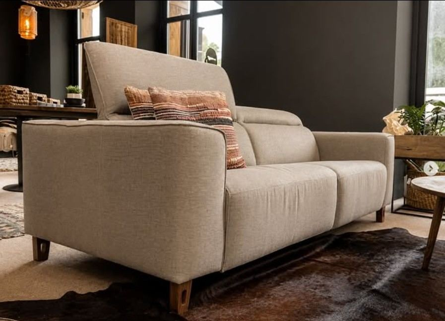
Sofás y piezas a medida, elegidas para durar y para encajar en el espacio real.
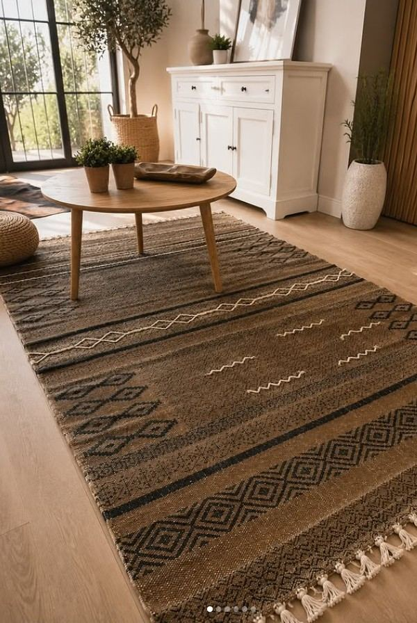
Alfombras, cojines y ropa de hogar a juego con cada proyecto.
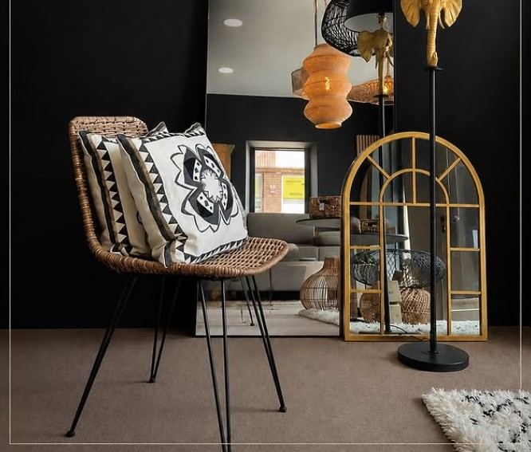
Los detalles que terminan de definir un espacio: espejos, lámparas, objetos.
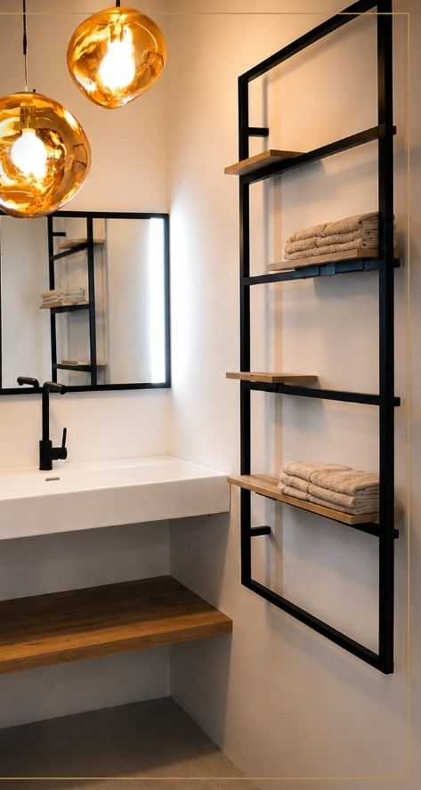
Baños, cocinas y espacios completos: de la obra a la decoración final.
Proyectos
Blancos suaves, madera clara y fibras naturales, para espacios que necesitan luz.
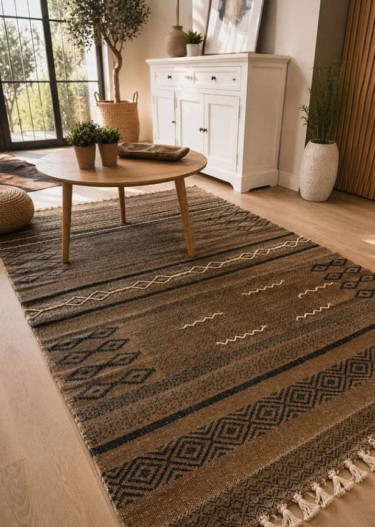
Paredes con personalidad y detalles en latón que marcan la diferencia.
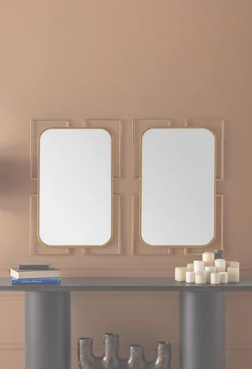
Madera, boucle y fibras naturales: espacios pensados para quedarse en ellos.
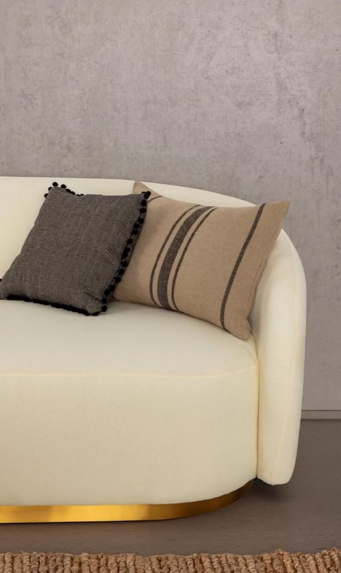
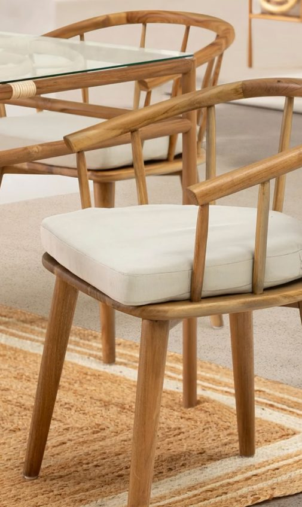
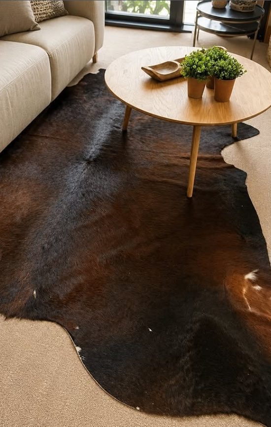
El estudio
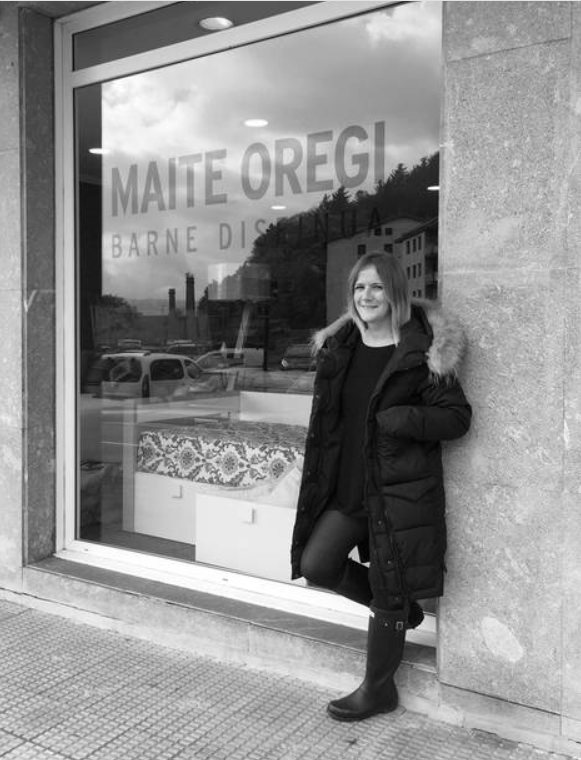
Formada en decoración y diseño gráfico, Maite dirige su propio estudio en Orio —vive en Aia, muy cerca— y trae mobiliario de proveedores del País Vasco, del resto de España y de Italia, combinando estilos y materiales según lo que pide cada proyecto.
Su forma de trabajar parte siempre del cliente: asesora, prepara planos y presupuestos, y acompaña todo el proceso, desde la primera idea hasta que el espacio queda terminado.
“Cada persona es quien decide sobre sus propios gustos.”